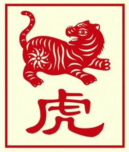

The Chinese Zodiac: Tiger

- Fixed Season: Spring
- Fixed Direction: East-Northeast
- Fixed Element: Wood/Yang
- Associated Sun Sign: Aquarius
The Tiger's name says a lot about their character, with a hard interiority that holds up a wall to the outside world. While the Tiger is incredibly strong and stable, however, they sometimes hold too much inside and can find it difficult to let their stress out. They tend to act without warning too, moving from one area to another in an attempt to either distract themselves or seek out new experiences. More often than not, however, this is an exciting occurrence and something that their friends and family look forward to.
Within the Tiger lies so much more than a strong defense, and there is a love of adventure that guides their more personal interactions. From setting out to discover new things to getting lost in their thoughts and dreams, the Tiger rarely ever shows exactly how they are feeling or what they are thinking. Though the reason for this stems not from a sense of deceit, but pride in the trust and stability they inspire in others. Altogether then, the Tiger is a person who is capable of a impressive feats from time to time, as long as they keep a mindful view of how others view their actions.